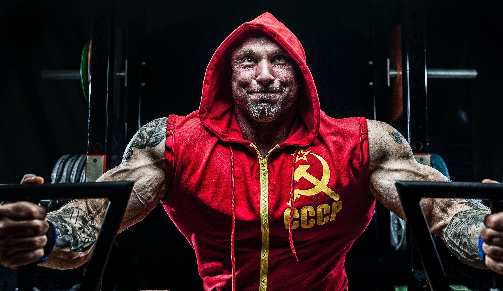

가슴(chest)

ㅇ 벤치프레스
팔각도는 준비자세에서 주먹을 서로 마주했을때 전완근이 수평이 되게하고 그 상태 그대로 바벨을 잡고 수행
팔의 상완은 외회전하여 어깨를 내려주고 팔꿈치부터 손목까지의 부분을 내회전하여 수행(어깨충돌 방지)
들어올릴 때 갈비뼈와 배부분 계속 힘주며 올리기
팔 다펴서 팔꿈치에 무게 걸지말고 올리면서 가슴 짜기
날개뼈 고정이 바벨을 뽑으면서 풀린다면 바벨을 밀어 뽑는게 아닌 접혀있던 팔꿈치만을 펴서 뽑기
이완 시 바벨은 유두와 명치사이, 수축 시 어깨위치(즉, 대각선으로 수행)
시선은 고개를 들어 뒤통수 위쪽부분이 벤치를 누른다는 느낌으로 대각선 천장을 바라보기(가슴을 열어주기위한 공간을 위해)
겨드랑이 부분을 늘리려고 하지말고 가슴 중앙부분을 앞으로 내밀며 늘리는 것에 집중
다리를 몸쪽으로 끌어 허리를 과도하게 아치로 만들지 마라(허리 부상 위험) 허리는 편안하게
과도한 허리 신전이 아닌 명치만 올려서 수행
올릴 때 J를 그리며 올리기
ㅇ 덤벨벤치프레스
주먹을 마주보고 가슴에 붙여 전완근이 수평이 되는 자세가 알맞은 팔꿈치 각도
내리는 느낌이 아닌 잡아당긴다는 느낌으로(세모 모양의 산형태로 내려갔다가 올라갔다가 운동 수행)
힘빠지면 덤벨 흔들리면서 반원 모양으로 올라오는데 그렇게 하지말고 세모 모양으로 그대로 내려갔다 올라오기
팔의 상완부분(어깨부터 팔꿈치)과 손의 회전각도를 일치시키며 수행(덤벨만의 장점이며 어깨부상을 방지가능)
대각선 위를 바라보며 가슴뼈 열어줄 공간 만든다고 생각하기
ㅇ 인클라인바벨프레스
전완근과 팔꿈치 수직으로 내려오기
바 위치는 쇄골 바로 밑 윗가슴
내려갔다 그 힘 그대로 올리기
반동이나 어깨힘 쓰지말고 전완근 힘으로 내려왔듯이 전완근 힘만으로 올리기
올릴 때 힘빠져서 어깨 들썩이지말고 어깨 꾹 누른 상태로 올리기
힘들면 팔꿈치 각도 좁혀짐, 팔꿈치 각도 열여주며 수행함을 생각하기
힘들면 바를 들어올릴때 수직으로 올리지 않고 앞으로 올리는거 주의하기, 수직으로만 내려간 그대로 올리기
쇄골 바로 밑 윗가슴을 최대한 늘리는 것을 느끼며 수행
턱과 쇄골이 하늘로 쏠듯이 내밀기
ㅇ 인클라인덤벨프레스
쇄골 바로 밑 윗가슴을 최대한 늘리는 것을 느끼며 수행
턱과 쇄골이 하늘로 쏠듯이 내밀기
내려갈때 가슴 최대로 열기
ㅇ체스트 프레스 머신
의자 높이는 그립을 잡는 부분이 가슴 중앙에 위치하도록
가슴전만하고 견착해서 수행
그립 넓이는 팔꿈치와 손이 수직이 되도록
수축과 이완 모두 견착과 가슴전만 유지, 특히 이완 시 가슴 마중나가기
생각보다 많이 팔꿈치 열기
ㅇ 플라이 머신
엉덩이 딱 붙게 앉지 말고 견착할 여유공간 생각해서 살짝 띄어 앉기
손잡이 잡을 때 안쪽까지 잡기
팔꿈치 밑에 보지 않고 어깨와 일직선
이완 시 가슴 마중나가기
이완 시 팔꿈치는 아래방향이 아닌 수평으로 옆방향으로 향하기
손날로 미는 힘으로 수축
수축 시 가슴 짜기
턱을 들어서 뒤통수 위쪽 부분이 벤치에 닿은 상태로 수행(날개뼈가 고정될 공간을 만들기 위해)
가슴사이 뼈를 연다고 생각해면서 수행
어깨는 올라가지 않고 항상 눌러주며 수행
ㅇ 딥스
가슴 펴기
엉덩이 더 내밀기
팔꿈치 생각보다 더 열기
올라오면서 가슴 쪼이기
내려갈 때 꾹 눌러주기
가슴 무게중심이 앞으로 가더라도 엉덩이를 뒤로 빼고 수행하면 괜찮음
ㅇ 인클라인 케이블 플라이
벤치 각도 30도~45도
준비 자세 및 수축 시 손의 위치는 쇄골 높이(손이 내려가지 않도록 주의)
이완 시 가슴 마중나가기
이완 시 견갑 최대로 모으기
수축 시 손을 먼저 모으고 가슴 짜기